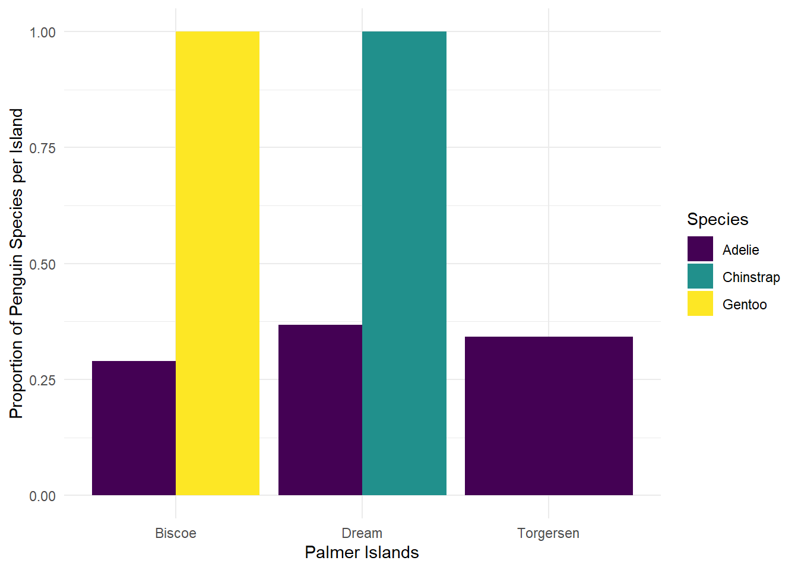

df |>
mutate(new_column_name = what_it_contains)PA 6: Summarizing Palmer Penguins
Data Wrangling with dplyr
Today you will use the dplyr package to summarize and manage some data. We explore some of the physical features of the Palmer penguins, with the goal of writing efficient code and learning a few new functions.
This task is complex. It requires many different types of abilities. Everyone will be good at some of these abilities but nobody will be good at all of them. In order to solve this puzzle, you will need to use the skills of each member of your group.
Groupwork Protocols
During the Practice Activity, you and your partner will alternate between two roles—Computer and Coder.
When you are the Computer, you will type into the Quarto document in RStudio. However, you do not type your own ideas. Instead, you type what the Coder tells you to type. You are permitted to ask the Coder clarifying questions, and, if both of you have a question, you are permitted to ask the professor. You are expected to run the code provided by the Coder and, if necessary, to work with the Coder to debug the code. Once the code runs, you are expected to collaborate with the Coder to write code comments that describe the actions taken by your code.
When you are the Coder, you are responsible for reading the instructions / prompts and directing the Computer what to type in the Quarto document. You are responsible for managing the resources your group has available to you (e.g., cheatsheet, textbook). If necessary, you should work with the Computer to debug the code you specified. Once the code runs, you are expected to collaborate with the Computer to write code comments that describe the actions taken by your code.
Here are more details of the Pair Programming Protocols
Note
The partner who has the most siblings will start as the Computer (typing and listening to instructions from the Coder).
Group Norms
Remember, your group is expected to adhere to the following norms:
- Be curious. Don’t correct.
- Be open minded.
- Ask questions rather than contribute.
- Respect each other.
- Allow each teammate to contribute to the activity through their role.
- Do not divide the work.
- No cross talk with other groups.
- Communicate with each other!
Goals for the Activity
- Solve issues in your data as you read it in specifying NA values and cleaning up variable names
- Apply data verbs from
dplyrto extract specific information from a large data set.
THROUGHOUT the Activity be sure to follow the Style Guide by doing the following:
- load the appropriate packages at the beginning of the Quarto doc
- use proper spacing
- name all code chunks
- comment at least once in each code chunk to describe why you made your coding decisions
- add appropriate labels to all graphic axes
Setting up your Project
Your project should have the following components:
- completed pa-6-summarizing-penguins-activity.qmd
- rendered file as
.html
Goals for the Activity
- Use
mutate(),group_by(), andsummarize()to answer some questions about the penguins.
- Learn a few other
dplyrfunctions such asdrop_na()andcount()that can be used in summarizing data.
- Learn the
dplyrfunctionscase_when()andacross()to clean up and create new variables.
- Connect summarized and created variables and graphics together to answer research questions.
THROUGHOUT THE Activity be sure to follow the Style Guide by doing the following:
- load the appropriate packages at the beginning of the Quarto document
- use proper spacing
- name all code chunks
- comment at least once in each code chunk to describe why you made your coding decisions
- add appropriate labels to all graphic axes
- use appropriate white space
Review of dplyr Verbs
Create new variables with mutate()
Use mutate() to add a new column, while keeping the existing columns. The general structure is:
For example, if I had a data frame df with columns A and B, I can add a new column C that is the sum of A and B as follows (note: you can also use sum(A,B) here instead of A + B):
df |>
mutate(C = A + B)For example, we can convert body mass to kilograms:
penguins |>
mutate(body_mass_kg = body_mass_g / 1000)# A tibble: 344 × 9
species island bill_length_mm bill_depth_mm flipper_length_mm body_mass_g
<fct> <fct> <dbl> <dbl> <int> <int>
1 Adelie Torgersen 39.1 18.7 181 3750
2 Adelie Torgersen 39.5 17.4 186 3800
3 Adelie Torgersen 40.3 18 195 3250
4 Adelie Torgersen NA NA NA NA
5 Adelie Torgersen 36.7 19.3 193 3450
6 Adelie Torgersen 39.3 20.6 190 3650
7 Adelie Torgersen 38.9 17.8 181 3625
8 Adelie Torgersen 39.2 19.6 195 4675
9 Adelie Torgersen 34.1 18.1 193 3475
10 Adelie Torgersen 42 20.2 190 4250
# ℹ 334 more rows
# ℹ 3 more variables: sex <fct>, year <int>, body_mass_kg <dbl>We can also use mutate() to modify an existing variable. By default, R reports factors in alphabetical order (you may notice in your boxplot they always print in the same order, Adelie, Chinstrap, Gentoo). If we want to reorder, we can use a function fct_relevel() from the forcats package, which we will learn about in a few weeks.
penguins |>
mutate(species =
fct_relevel(species,
"Adelie",
"Gentoo",
"Chinstrap"))# A tibble: 344 × 8
species island bill_length_mm bill_depth_mm flipper_length_mm body_mass_g
<fct> <fct> <dbl> <dbl> <int> <int>
1 Adelie Torgersen 39.1 18.7 181 3750
2 Adelie Torgersen 39.5 17.4 186 3800
3 Adelie Torgersen 40.3 18 195 3250
4 Adelie Torgersen NA NA NA NA
5 Adelie Torgersen 36.7 19.3 193 3450
6 Adelie Torgersen 39.3 20.6 190 3650
7 Adelie Torgersen 38.9 17.8 181 3625
8 Adelie Torgersen 39.2 19.6 195 4675
9 Adelie Torgersen 34.1 18.1 193 3475
10 Adelie Torgersen 42 20.2 190 4250
# ℹ 334 more rows
# ℹ 2 more variables: sex <fct>, year <int>Drop All Rows with Missing Values
Notice that for some variables we have NA listed for missing values. We can use drop_na() to remove the missing values from those variables
penguins |>
drop_na() #if we leave it blank it will remove any row with an NA# A tibble: 333 × 8
species island bill_length_mm bill_depth_mm flipper_length_mm body_mass_g
<fct> <fct> <dbl> <dbl> <int> <int>
1 Adelie Torgersen 39.1 18.7 181 3750
2 Adelie Torgersen 39.5 17.4 186 3800
3 Adelie Torgersen 40.3 18 195 3250
4 Adelie Torgersen 36.7 19.3 193 3450
5 Adelie Torgersen 39.3 20.6 190 3650
6 Adelie Torgersen 38.9 17.8 181 3625
7 Adelie Torgersen 39.2 19.6 195 4675
8 Adelie Torgersen 41.1 17.6 182 3200
9 Adelie Torgersen 38.6 21.2 191 3800
10 Adelie Torgersen 34.6 21.1 198 4400
# ℹ 323 more rows
# ℹ 2 more variables: sex <fct>, year <int>Or specify a specific variable(s) to drop those rows with missing values.
penguins |>
drop_na(sex) #adding a variable, removes rows with NA just for that variable# A tibble: 333 × 8
species island bill_length_mm bill_depth_mm flipper_length_mm body_mass_g
<fct> <fct> <dbl> <dbl> <int> <int>
1 Adelie Torgersen 39.1 18.7 181 3750
2 Adelie Torgersen 39.5 17.4 186 3800
3 Adelie Torgersen 40.3 18 195 3250
4 Adelie Torgersen 36.7 19.3 193 3450
5 Adelie Torgersen 39.3 20.6 190 3650
6 Adelie Torgersen 38.9 17.8 181 3625
7 Adelie Torgersen 39.2 19.6 195 4675
8 Adelie Torgersen 41.1 17.6 182 3200
9 Adelie Torgersen 38.6 21.2 191 3800
10 Adelie Torgersen 34.6 21.1 198 4400
# ℹ 323 more rows
# ℹ 2 more variables: sex <fct>, year <int>Summarize data using group_by() and summarize()
Use the combination of group_by() and summarize() to find find summary statistics for different groups, and put them in a nice table.
group_by() “takes an existing table and converts it into a grouped table where operations are performed ‘by group’”
summarize() “creates a new data frame. It will have one (or more) rows for each combination of grouping variables; if there are no grouping variables, the output will have a single row summarizing all observations in the input. It will contain one column for each grouping variable and one column for each of the summary statistics that you have specified”
For example, we can calculate the mean and standard deviation for body mass:
penguins |>
group_by(species) |>
summarize(mass_mean = mean(body_mass_g,
na.rm = TRUE),
mass_sd = sd(body_mass_g,
na.rm = TRUE))# A tibble: 3 × 3
species mass_mean mass_sd
<fct> <dbl> <dbl>
1 Adelie 3701. 459.
2 Chinstrap 3733. 384.
3 Gentoo 5076. 504.Note, that na.rm = TRUE removes NA from the calculations instead of removing them from the data like drop_na(). Often, errors reported with mean() and similar functions are because there are NA in the data.
Second Note, if you use mosaic in your statistics class, note that mean() used here is from base R, so there is no ~ in front of the variable. If you wanted to use mosaic you can, you will just need to load that package and modify the syntax:
- Base R:
mean(x)
- Mosaic:
mean(~x)
New function across()
The across() function is especially useful within summarize() to efficiently create summary tables with one or more functions applied to multiple variables (columns).
Let’s compare two ways of doing the same thing: creating a summary table of mean values for all penguin size measurements ending in “mm” (bill depth, bill length, flipper length), by species.
Approach 1:
penguins |>
group_by(species) |>
summarize(bill_length_mean = mean(bill_length_mm,
na.rm = TRUE),
bill_depth_mean = mean(bill_depth_mm,
na.rm = TRUE),
flipper_length_mean = mean(flipper_length_mm,
na.rm = TRUE))# A tibble: 3 × 4
species bill_length_mean bill_depth_mean flipper_length_mean
<fct> <dbl> <dbl> <dbl>
1 Adelie 38.8 18.3 190.
2 Chinstrap 48.8 18.4 196.
3 Gentoo 47.5 15.0 217.Approach 2:
penguins |>
group_by(species) |>
summarize(across(ends_with("mm"),
.fns = ~mean(.x, na.rm = TRUE)))# A tibble: 3 × 4
species bill_length_mm bill_depth_mm flipper_length_mm
<fct> <dbl> <dbl> <dbl>
1 Adelie 38.8 18.3 190.
2 Chinstrap 48.8 18.4 196.
3 Gentoo 47.5 15.0 217.We can modify multiple names by appending something to the beginning
penguins |>
group_by(year) |>
summarise(across(starts_with("bill"),
.fns = ~max(.x, na.rm = TRUE),
.names = "max_{.col}"))# A tibble: 3 × 3
year max_bill_length_mm max_bill_depth_mm
<int> <dbl> <dbl>
1 2007 59.6 21.5
2 2008 54.3 21.1
3 2009 55.9 20.7or ending of the column name:
penguins |>
group_by(year) |>
summarise(across(starts_with("bill"),
.fns = ~max(.x, na.rm = TRUE),
.names = "{.col}_max"))# A tibble: 3 × 3
year bill_length_mm_max bill_depth_mm_max
<int> <dbl> <dbl>
1 2007 59.6 21.5
2 2008 54.3 21.1
3 2009 55.9 20.7Starting from penguins, create a summary table that finds the mean and standard deviation for all variables containing the string “length”, grouped by penguin species. Update the column names to start with “avg_” or “sd_”, followed by the original column names.
There’s quite a bit happening here, so a little breakdown:
- We use
contains("length")to indicate we’ll apply the functions to any columns with the word “length” in the name
- Within
list()is where the functions to be applied across columns are given, and where their “names” of “avg” and “stdev” are set
- We use
.names =to define the final column names in the summary table. Here, the name should start with the function “name” specified above (“avg” or “stdev”), then an underscore, then the original column name (that’s what"{.fn}_{.col}"will do)
penguins |>
group_by(species) |>
summarize(across(contains("length"),
list(avg = ~mean(.x, na.rm = TRUE),
stdev = ~sd(.x, na.rm = TRUE)),
.names = "{.fn}_{.col}"))# A tibble: 3 × 5
species avg_bill_length_mm stdev_bill_length_mm avg_flipper_length_mm
<fct> <dbl> <dbl> <dbl>
1 Adelie 38.8 2.66 190.
2 Chinstrap 48.8 3.34 196.
3 Gentoo 47.5 3.08 217.
# ℹ 1 more variable: stdev_flipper_length_mm <dbl>New Function count()
The dplyr::count() function wraps a bunch of things into one beautiful friendly line of code to help you find counts of observations by group. To demonstrate what it does, let’s find the counts of penguins in the penguins dataset by species in two different ways:
- Using
group_by() |> summarize()withn()to count observations
- Using
count()to do the exact same thing
penguins |>
group_by(species) |>
summarize(n = n())# A tibble: 3 × 2
species n
<fct> <int>
1 Adelie 152
2 Chinstrap 68
3 Gentoo 124penguins |>
count(species)# A tibble: 3 × 2
species n
<fct> <int>
1 Adelie 152
2 Chinstrap 68
3 Gentoo 124For example, what does the following code do?
penguins |>
count(species, year)# A tibble: 9 × 3
species year n
<fct> <int> <int>
1 Adelie 2007 50
2 Adelie 2008 50
3 Adelie 2009 52
4 Chinstrap 2007 26
5 Chinstrap 2008 18
6 Chinstrap 2009 24
7 Gentoo 2007 34
8 Gentoo 2008 46
9 Gentoo 2009 44We can combine count() with mutate() to find proportions conditioned on other variables.
penguins |>
count(species, island) |>
group_by(species) |>
mutate(total = sum(n), #calculates the total per species group
prop = n/total) #calculates the proportion on each island per species group # A tibble: 5 × 5
# Groups: species [3]
species island n total prop
<fct> <fct> <int> <int> <dbl>
1 Adelie Biscoe 44 152 0.289
2 Adelie Dream 56 152 0.368
3 Adelie Torgersen 52 152 0.342
4 Chinstrap Dream 68 68 1
5 Gentoo Biscoe 124 124 1 We can then directly pipe the modified data directly into a plot:
penguins |>
count(species, island) |>
group_by(species) |>
mutate(total = sum(n),
prop = n/total) |>
ggplot(aes(x = island, y = prop, fill = species)) + #don't forget to change to +
geom_col(position = position_dodge()) +
scale_fill_viridis_d() +
labs(x = "Palmer Islands",
y = "Proportion of Penguin Species per Island",
fill = "Species") +
theme_minimal()
New Function case_when()
The case_when() function is like a really friendly if-else statement. When used within mutate(), it allows you to add a new column containing values dependent on your condition(s).
To penguins, add a new column size_bin that contains:
- “large” if body mass is greater than 4500 g
- “medium” if body mass is greater than 3000 g, and less than or equal to 4500 g
- “small” if body mass is less than or equal to 3000 g
penguins |>
select(species, body_mass_g:year) |>
mutate(size_bin = case_when(
body_mass_g > 4500 ~ "large",
body_mass_g > 3000 & body_mass_g <= 4500 ~ "medium",
body_mass_g <= 3000 ~ "small",
.default = "no measurement"
)
)# A tibble: 344 × 5
species body_mass_g sex year size_bin
<fct> <int> <fct> <int> <chr>
1 Adelie 3750 male 2007 medium
2 Adelie 3800 female 2007 medium
3 Adelie 3250 female 2007 medium
4 Adelie NA <NA> 2007 no measurement
5 Adelie 3450 female 2007 medium
6 Adelie 3650 male 2007 medium
7 Adelie 3625 female 2007 medium
8 Adelie 4675 male 2007 large
9 Adelie 3475 <NA> 2007 medium
10 Adelie 4250 <NA> 2007 medium
# ℹ 334 more rowsActivity: Recreate the Following Summary Tables
Starting from penguins, write a piped “sentence” to:
- Exclude penguins observed on Biscoe Island
- Only keep variables
speciesthroughbody_mass_g
- Group the data by
species
- Find the mean value for any variable containing the string “length”, by penguin species, with column names updated to the original column name appended with “_mean” at the end
# A tibble: 2 × 3
species bill_length_mm_mean flipper_length_mm_mean
<fct> <dbl> <dbl>
1 Adelie 38.7 190.
2 Chinstrap 48.8 196.Now do the following in one piped “sentence” to:
Starting with penguins,
- Only keep observations for chinstrap penguins,
- Keep only the
flipper_length_mmandbody_mass_gvariables.
- Add a new column called
fm_ratiothat contains the ratio of flipper length to body mass for each penguin.
- Add another column named
ratio_binwhich contains the word “high” iffm_ratiois greater than or equal to 0.05, “low” if the ratio is less than 0.05, and “no record” if anything else (e.g. NA).
- Identify the last steps to get the table printed below.
# A tibble: 2 × 3
ratio_bin avg_flipper avg_mass
<chr> <dbl> <dbl>
1 high 195. 3606.
2 low 201. 4269.Canvas Quiz
What species (not on Biscoe Island) has the biggest average bill length?
What species (not on Biscoe Island) has the smallest average flipper length?
For Chinstrap penguins, what is the average flipper length for penguins with a high flipper to mass ratio (round to 2 decimal places)?
Wrapping Up
The biggest challenge with data wrangling is figuring out what you want to do first and then thinking about how the vocabulary translates to the code. Once you know what you want to do, it is much easier to look up how to do it!